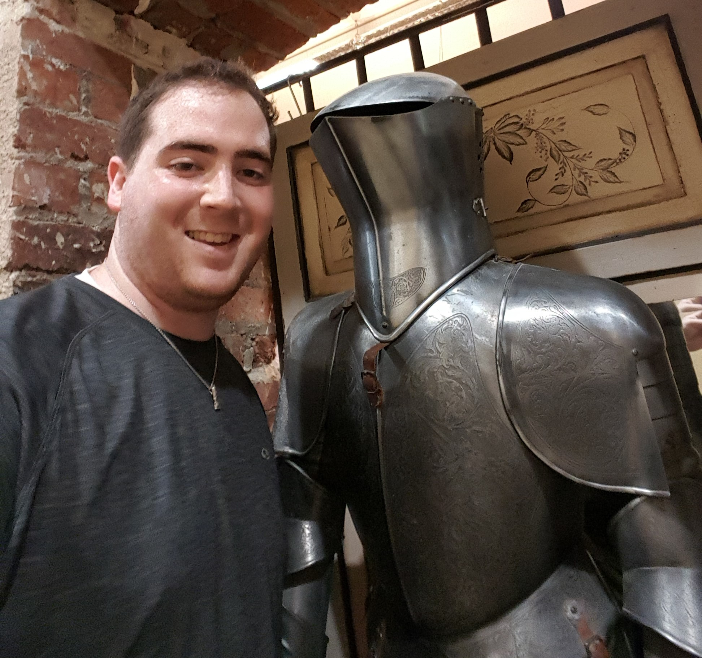

About Me
Kevin Arnold was born in Freehold, New Jersey, and was raised in Manalapan, New Jersey. Kevin earned his Bachelor's degree in Finance from Rutgers Business School. After graduating, he worked as a Financial Analyst for Fortis/BNP Paribas performing a variety of reporting procedures.
Currently, Kevin is enrolled in the Rutgers Coding Bootcamp and is hoping to embark on a new career upon its completion. In his free time, Kevin enjoys watching sports, and good movies, playing video games, and spending time with friends, especially his two-year-old chocolate lab, Bentley.
Connect with Me